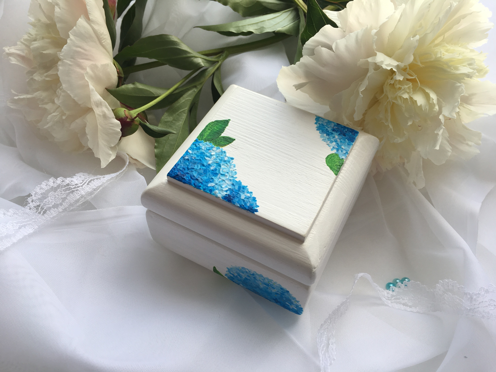

Шкатулка для обручальных колец
Шкатулка из экологичных материалов, размер 8/8/6 массив сосны, акриловые краски, акриловый лак на водной основе. Можно мочить, но не замачивать. Протирать влажной тканью.
Почта России
EMS
CDEC
Самовывоз
Шкатулка для обручальных колец ручной работы.
© 2018 Все права защищены